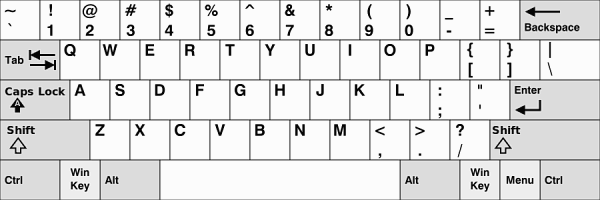
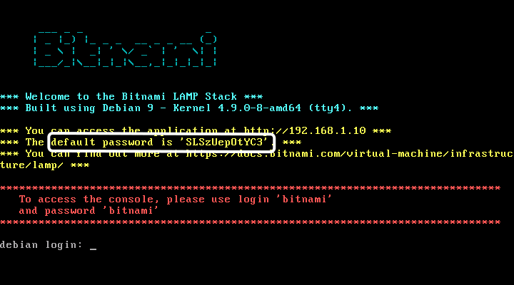
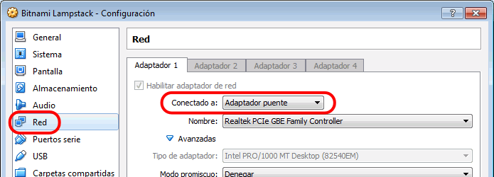

Para averiguar la versión de Debian de la máquina, puede utilizar los siguientes comandos:
cat /etc/issuecat /etc/debian-versioncat /etc/issuePara averiguar la versión de Ubuntu, escriba el comando:
lsb_release -aPara averiguar la versión del kernel de Ubuntu, escriba el comando:
uname -aPara apagar una máquina, escriba uno de estos comandos:
sudo poweroffsudo shutdown -h nowPara reiniciar una máquina, escriba este comando:
sudo rebootPara cerrar la sesión (sin apagar la máquina, que sigue funcionando):
exitPara cambiar entre los terminales en modo texto disponibles, teclear Ctrl+Alt+F1, Ctrl+Alt+F2, ..., Ctrl+Alt+F6.
Para averiguar la IP de la máquina, escriba el comando:
ifconfig | grep 192.168También se puede escribir un comando más moderno:
ip addr | grep 192.168Cuando la salida por pantalla de un comando es muy larga, no se puede ver completa. Para ello, se puede utilizar el visor less (o more):
comando | lessEn less, algunos comandos son: q (salir), f (forward = avanzar una página), b (backwards = retroceder una página), /texto (buscar texto), n (buscar siguiente), N (buscar anterior).
Las máquinas virtuales de Bitnami tienen configurado el teclado de Estados Unidos. Puede cambiar la configuración del teclado a otros idiomas mediante los comandos:
sudo apt install dialog
sudo apt install console-setupEn la instalación de console-setup, indique las características de su teclado. Por ejemplo:
Dependiendo del teclado que indique, el diálogo puede pedirle más características de su teclado. Por ejemplo:
Si necesita volver a reconfigurar su teclado, utilice la orden:
sudo dpkg-reconfigure keyboard-configurationLa configuración del teclado se guarda en el fichero /etc/default/keyboard.
Esta es la disposición de los caracteres en un teclado de Estados Unidos de América.

| Posición en el teclado español | Resultado si está configurado como teclado inglés |
|---|---|
| Ñ | : |
| Ç | | |
| - | / |
| ' | - |
| ( | * |
| ¿ | + |
| · | # |
La tecla del extremo derecho de la fila q ... p del teclado estadounidense se encuentra situada en el extremo derecho de la fila a ... l del teclado español.
sudo apt install aplicacionPara averiguar la versión de un paquete concreto:
apt list paquetesudo dpkg -l | grep aplicacionEste comando también permite saber si un paquete está instalado, ya que si no está instalado, no se obtiene ningún resultado.
Por ejemplo, el servicio de SSH (sshd):
ps aux | grep sshdNota: Si la respuesta contiene sólo una línea que acaba en grep sshd, es que el servicio no está habilitado.
Por ejemplo, el servicio de SSH:
sudo start sshAntes de iniciar los servicios, es necesarios configurarlos correctamente.
Para ver el espacio de disco ocupado y libre:
sudo du -hs /pathsudo du -h --max-depth=n /pathPara buscar un archivo:
sudo find /path -name archivoPara mostrar sólo las líneas que contienen una palabra:
sudo find /path -name archivo | grep palabraPara mostrar sólo las líneas que no contienen una palabra:
sudo find /path -name archivo | grep -v palabraReferencia: http://tldp.org/LDP/intro-linux/html/sect_06_02.html
Para editar un archivo con vi:
sudo vi nombre_de_archivoEl editor vi abre el archivo en modo Comando.
| Comando | Función |
|---|---|
| i | Pasar a modo Edición |
| a | Pasar a modo Edición (avanzando una posición el curso) |
| o | Añadir una línea en blanco y pasar a modo Edición |
| Esc | Volver a modo Comando |
| v / V | Señalar el principio del fragmento a copiar (seleccionando por caracteres / líneas) |
| d / y | Señalar el final del fragmento a cortar / copiar |
| p | Señalar el lugar en el que se pega el fragmento cortado o copiado |
| Comando | Función |
|---|---|
| :q | Salir |
| :q! | Forzar salir (sin guardar) |
| :w | Guardar |
| /xyz | Buscar xyz |
| n dd | Borrar n líneas |
Comandos:
Para cambiar la contraseña del usuario root de MySQL, escriba la orden:
/opt/bitnami/mysql/bin/mysqladmin -p -u root password NEW_PASSWORDReferencias: Bitnami docs
La contraseña del usuario bitnami suele ser bitnami.
La contraseña del usuario root de las aplicaciones de infraestructura (por ejemplo, las bases de datos) se muestra al iniciarse la máquina.

Para volver a ver esa contraseña:
cat ./bitnami_credentialsDirectorio de Apache
cd /opt/bitnami/apache2/Reiniciar Apache
sudo /opt/bitnami/ctlscript.sh restart apacheReferencia: Bitnami docs
cd /opt/bitnami/apps/nextcloudPara que la máquina virtual reciba una IP en la misma subred que el ordenador anfitrión, por ejemplo IP 192.168.XXX.YYY, en VirtualBox la configuración del adaptador debe ser Conectado a "Adaptador puente".

Que yo sepa, no se puede copiar y pegar entre el ordenador anfitirión y una máquina virtual Debian de Bitnami en modo terminal.
Si se necesita copiar y pegar, la solución sería conectar mediante SSH con PuTTY (como en el ejercicio Bitnami (2) 2. Para pegar en el terminal de PuTTY, hay que teclear Shift + Insert.
Si la máquina virtual tiene un entorno gráfico, entonces sí que se puede copiar y pegar, instalando primero las VirtualBox Guest Additions y activando el menú de VirtualBox Dispositivos > Arrastrar y soltar.
Documentación de Bitnami: Instalar VirtualBox Guest Additions
Para comprobar que las VirtualBox Guest Additions están instaladas, escriba
lsmod | grep vboxguestLa salida tiene que ser algo de este estilo
vboxguest 286720 2 vboxsfPara tener disponible una aplicación web o un sitio web en un puerto determinado hay que editar los archivos siguientes:
# apache/conf/httpd.conf
Listen PUERTO
# apache/conf/extra/httpd-vhosts.conf
# Nota: Donde pone localhost podría ser una IP o un dominio o subdominio
<VirtualHost localhost:PUERTO>
ServerAdmin EMAIL
DocumentRoot "RUTA A PÁGINAS"
ServerName localhost:PUERTO
ErrorLog "logs/ERROR.LOG"
CustomLog "logs/ACCESS.LOG" combined
</VirtualHost>
Un proxy inverso permite enviar las peticiones a un puerto a otras direcciones (de la misma máquina o de otras). En el archivo de configuración hay que cargar los módulos necesarios.
En el ejemplo siguiente, la máquina tiene dos hosts virtuales en dos puertos y el proxy envía las peticiones http://localhost/ruta a un host u otro dependiendo de la ruta.
# apache/conf/httpd.conf
# Descomentar los módulos proxy necesarios
LoadModule proxy_module modules/mod_proxy.so
#LoadModule proxy_ajp_module modules/mod_proxy_ajp.so
#LoadModule proxy_balancer_module modules/mod_proxy_balancer.so
#LoadModule proxy_connect_module modules/mod_proxy_connect.so
#LoadModule proxy_express_module modules/mod_proxy_express.so
#LoadModule proxy_fcgi_module modules/mod_proxy_fcgi.so
#LoadModule proxy_ftp_module modules/mod_proxy_ftp.so
#LoadModule proxy_html_module modules/mod_proxy_html.so
LoadModule proxy_http_module modules/mod_proxy_http.so
#LoadModule proxy_http2_module modules/mod_proxy_http2.so
#LoadModule proxy_scgi_module modules/mod_proxy_scgi.so
#LoadModule proxy_wstunnel_module modules/mod_proxy_wstunnel.so
# ...
# apache/conf/httpd.conf
# Virtual hosts
Include conf/extra/httpd-vhosts.conf
NameVirtualHost *:80
<VirtualHost *:80>
# Las directivas comentadas es porque yo no las he necesitado
# pero he leído que pueden ser necesarias en algunos casos
# ProxyPreserveHost On
# ProxyRequests Off
# ProxyVia Off
# ServerName localhost
# <Proxy *>
# Require all granted
# </Proxy>
# Servers to proxy the connection, or;
# List of application servers:
# Usage:
# ProxyPass / http://[IP Addr.]:[port]/
# ProxyPassReverse / http://[IP Addr.]:[port]/
# NOTA: Donde pone localhost podría ser una IP o un dominio o subdominio
# NOTA: Donde pone /XXX1 podría ser sólo /
ProxyPass /XXX1 http://localhost:PUERTO1
ProxyPassReverse /XXX1 http://localhost:PUERTO1
ProxyPass /XXX2 http://localhost:PUERTO2
ProxyPassReverse /XXX2 http://localhost:PUERTO2
</VirtualHost>